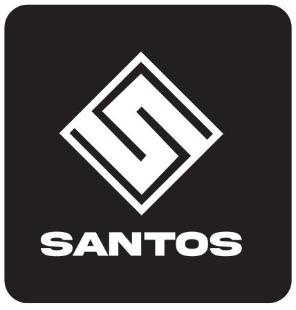
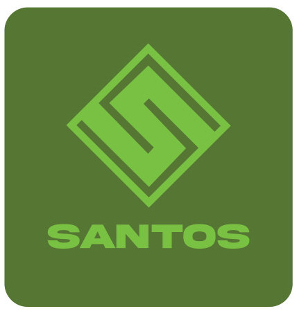
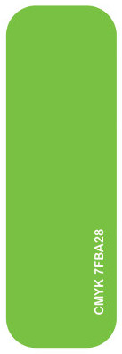
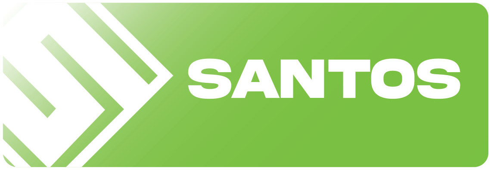

Peyzaj Markası
Santos
Baklava dilimi içinde kıvrılan “S”, bahçe yollarını ve düzenli peyzaj planını çağrıştırıyor. Canlı yeşil, markayı doğa ve büyümeyle doğrudan ilişkilendiriyor.
- Yıl
- 2025
- Tür
- Serbest çalışma
- Kapsam
- Logo, renk sistemi
#7FBA28
P PROCESS BLACK C



